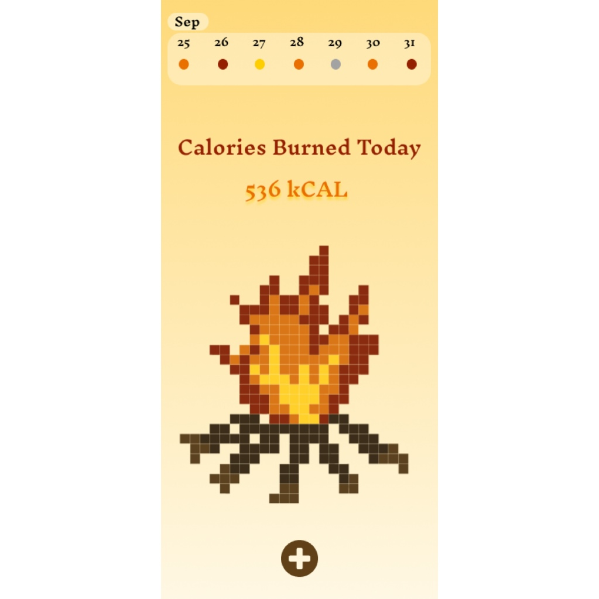
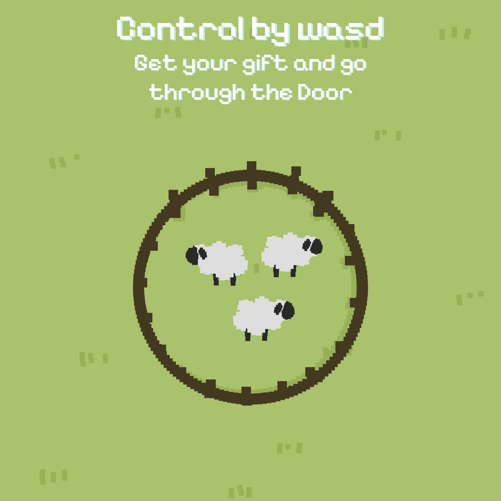
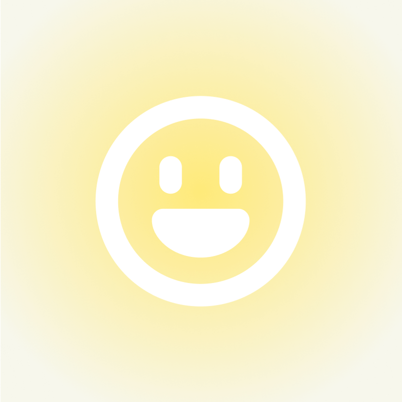
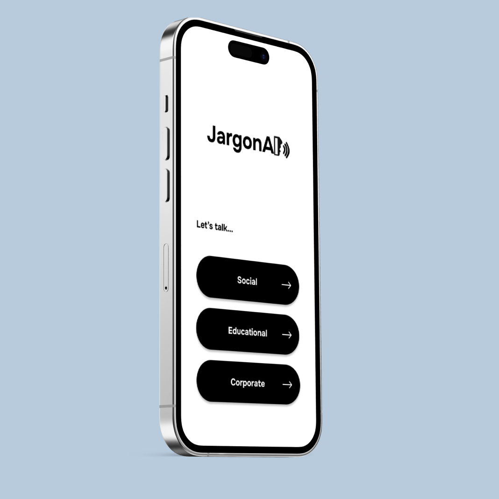
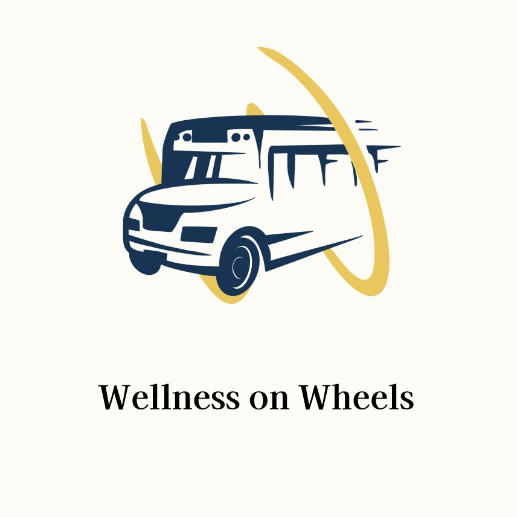

UI Design

Self-track APP
A mock-up of the primary interface for a tracking app. Built using Figma.

Wishes from Me to You
A pixal 2D puzzle game with a warm holiday message. Designed and built in Unity.

Esacape Alien Farm
A pixal 2D dungeon game. Design on Procreate and built using Android Studio.
Learn more->
One Button UI
A user interface with only one button. Designed and built with Figma.

JargonAI
A user interface mockup for an AI transplation app. Designed and built with Figma.
StylesUp
A user interface mockup for an outfit picking app. Designed and built with Procreate and Figma.

Wellness on Wheels
A mock up of the user interface for campus bus tracking app. Built using Figma.
Information Design
From Atlanta to Tampa
This project explores how personal memory and quantitative data can share the same space on a map.
Card title
This is a wider card with supporting text below as a natural lead-in to additional content. This content is a little bit longer.

Card title
This is a wider card with supporting text below as a natural lead-in to additional content. This content is a little bit longer.

Card title
This is a wider card with supporting text below as a natural lead-in to additional content. This content is a little bit longer.
Digital Art
...
Portrait
...
Poster
Stop-motion Video
...